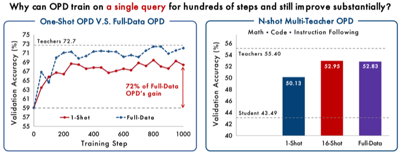

About Me
Hi! I am Zixuan Fu, an M.S. student in Computer Science and Technology at Tsinghua University and a member of THUNLP. I received my bachelor's degree in Software Engineering from Soochow University.
My research focuses on large language models: reinforcement learning, data science, and self-evolving language models.
News
-
MiniCPM5-2B is released, along with other open-source byproducts UltraData-Code and UltraData-RL-2609. I am responsible for the SFT-stage code data and the RL-stage code-oriented training.
-
Our work One-Shot OPD is released, with open-source training recipes and code. [Code]
-
UltraData-RL-2609 is released; I am responsible for the code-domain data.
-
MiniCPM5-1B and UltraData-SFT-2605 are released; I am responsible for the code-domain SFT data.
-
CPMobius is accepted to ICML 2026.
-
How Far Can Unsupervised RLVR Scale LLM Training? is accepted to ICLR 2026.
Publications
* denotes equal/core contribution, † denotes project lead, and ‡ denotes corresponding author.
RL & OPD
Data Science
Experience
ModelBest · Beijing
Algorithm Intern working on data and training for the UltraData and MiniCPM5 series — tiered pre-training data curation, code-domain SFT data, code-oriented general RL, and on-policy distillation.
Education
Tsinghua University · Computer Science and Technology
M.S., THUNLP · GPA 4.0/4.0
Soochow University · Software Engineering
B.Eng. · GPA 3.92/4.0 · Overall rank 1/95